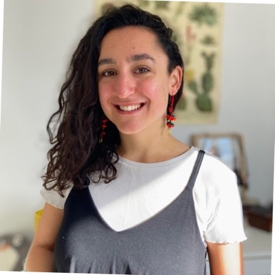

dilara simsek araiz
Facilitatrice
Facilitatrice
Diplômée en droit international et action humanitaire, je développe mon expertise dans la gestion de projets associatifs, la formation et le partenariat. Je suis particulièrement sensible à toutes les questions liées au genre, la migration et les droits humains. M'engager au sein de Merci pour ton non est l'opportunité pour moi de mettre mes compétences au service d'une cause qui me tient à coeur et en cohérence avec mes valeurs.